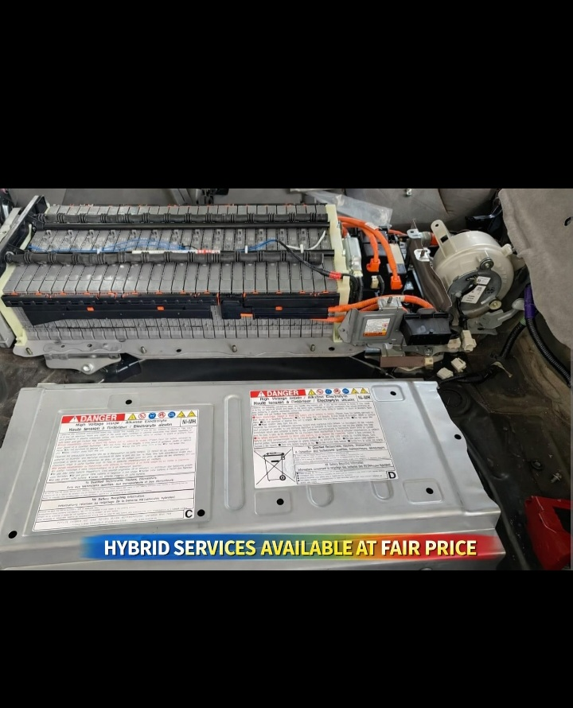

Your Journey to Sustainable Driving Starts Here.
Discover a wide range of new and modified hybrid cars. We also offer professional hybrid battery replacement services. ONLY at TBAG HYBRID MOTORS SPECIALIST, owned by Cyrus Maina.
View Our CarsOur Available Hybrid Cars
Hybrid Battery Replacement
We specialize in servicing and replacement of high-voltage hybrid batteries using safe, professional procedures.
Hybrid High-Voltage Battery Pack (HV Battery)
This is the main traction battery used in hybrid vehicles such as Toyota Prius and other Toyota hybrid models. It supplies high-voltage electrical power for electric driving and energy regeneration.
About TBAG HYBRID MOTORS SPECIALIST
We are a registered Hybrid Motor Vehicle Specialist based in Nyeri, Kenya.
Official Registration: BN-36SMYM50
Entity Status: Active
Registered Since: December 22, 2025
Contact Us
Phone: +254757782887
Email: cyrusmaina075@gmail.com